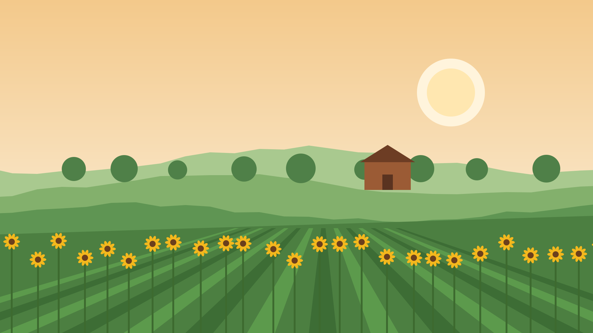

Season review
Northside Community Garden: the 2026 season
What we grew, what it cost, and what changes in 2027
So this is our review of the 2026 season, which ran from the first of March to the end of October. The committee put it together from the plot records, the harvest log and the bank statements. There's a vote on the 2027 plot fee at the end, so we'll leave time for that.
Tonight
Five things to cover in forty minutes
- The season in numbers5 min
- What changed on site10 min
- Where the money went10 min
- Membership and the 2027 fee10 min
- Questions and the vote5 min
We'll keep to forty minutes. The fee vote needs a quorum of thirty members, and we've got the sign-in sheet at the door to check that. Anyone who can't stay for the vote can leave a proxy form with Grace.
01
The season in numbers
First, the headline figures. All of them come from the harvest log by the shed door and the membership list, so they're only as good as what people wrote down.
2026 at a glance
Our biggest season since the garden opened
of produce logged, up from 3.1 tonnes in 2025
members, up from 168
volunteer hours on shared jobs
of plots let: 58 of 64
Two things drove the jump in harvest. One is the six new raised beds, and the other is the rain tanks, which kept beds watered through the dry July. The six empty plots are all on the north edge, where the hedge shades them until noon.
Sharing the harvest
A quarter of it went to the food bank
of fresh produce went to the Northside Food Bank, about 2,400 meals.
- 31
- Saturday drop-offs, one every week from May
- 140
- households a week collect from the food bank
Meals estimated at 500 grams of produce each, the food bank's own measure.
So the food bank collects every Saturday at eleven. They told us fresh vegetables are the thing they get least of, because supermarkets mostly give tins. We'd like to keep the same share next year, and the sharing bench by the gate makes that easy.
Harvest by month
August was the peak, at over a tonne
August was mostly tomatoes, beans and courgettes, with about 400 kilos of tomatoes alone. The October figure is higher than last year because of the squash, which we planted later and stored well.
Water
The rain tanks cut our mains water by a third
Across the season we used 164 thousand litres from the mains, against 228 thousand in 2025. That saved about 320 dollars on the water bill. The four tanks hold 20 thousand litres between them, and they were full again within a week of each dry spell ending.
For the first time since 2019, nobody is on the waiting list.
At the start of 2024 the list had 37 households and a wait of about fourteen months. Splitting six large plots into halves and building the new beds cleared it by June. Anyone who joins the list now gets a plot within a few weeks.
02
What changed on site
Next, the building work. Most of it was done by volunteers on the first Saturday of each month, with a contractor for the tank plumbing.
Site works
Two years of work, one more year to go
- Nov 2025City grant of $4,000 for water storage
- Feb 2026Four rain tanks fitted, 20,000 litres in all
- May 2026Six accessible raised beds open
- Oct 2026Tool shed rebuilt with a ramp
- Apr 2027Composting toilet by the east gate
- Jul 2027Polytunnel for seedlings
The shed was finished two weeks ago, so it's the newest thing on site. The toilet and the polytunnel both depend on funding we haven't secured yet. We'll come back to that near the end.
Access
Raised beds opened the garden to more people
Before
Ground-level plots only
Members who use a wheelchair or can't kneel had no plot they could work.
After
Six beds at 75 cm
Firm, wide paths to each bed. Eleven members now garden from a seat.
The beds cost 2,600 dollars, a bit over the budget of 2,400, because we used recycled plastic boards instead of timber. They should last twenty years without rotting. The Rotary grant covered 1,200 of the cost.
The east gate
The new beds sit next to the gate and the shed
- Level ground, 20 metres from the car park
- Tap and tool shed within reach of every bed
- Shade from the cherry tree after 3 pm

We chose this corner because it's the only level ground on site. The car park is the council's, and they've agreed to keep the two spaces by the gate for blue badge holders.

Harvest day, 6 September
400 neighbours came to see what we grow
Harvest day raised 640 dollars from the plant and produce stall, which counts in the plant sale figure. A hundred and sixty visitors signed up for the newsletter on the day. The local paper ran a photo on its front page the following week.
Soil sensors
Twelve sensors tell us when beds need water
def beds_to_water(readings, dry=30):
"""Beds whose soil moisture fell below `dry` percent."""
latest = {}
for r in readings: # one reading per sensor per hour
latest[r.bed] = r.moisture
return sorted(b for b, m in latest.items() if m < dry)
print(beds_to_water(today())) # ['B4', 'C2']Each morning the shed screen lists the beds below 30% moisture, so volunteers water only those.
A member who works in IT built this over the winter for about 300 dollars in parts. The sensors run on batteries that last a season. It's part of why the water bill came down, alongside the tanks.
Before winter
Seven of ten winter jobs are done
- Water off and every pipe drained
- New locks on the shed and both gates
- Tree survey of the north hedge, booked for 20 November
- Path repairs by the pond, booked for 4 December
- Bonfire area: closed for good, by members' vote in June
The list shows five of the ten jobs. The other five are routine and all done, like clearing gutters. The tree survey matters for the empty north plots, because if the council lets us cut the hedge back, those plots get morning sun.
03
Where the money went
Now the money. Grace checked every figure here against the bank statements at the end of October, and the accounts go to the auditor next week.
Income
Grants paid for almost half of the season
The grants were 4,000 dollars from the city's green spaces fund, for the tanks, and 1,200 from the Rotary Club for the raised beds. Neither grant repeats in 2027. That's why the fee question matters, because fees and the plant sale have to carry more of the running costs.
Spending
We spent $10,500, $150 under budget
| Item | Budget | Spent | Left over |
|---|---|---|---|
| Rain tanks and fitting | $4,000 | $3,900 | $100 |
| Raised beds | $2,400 | $2,600 | −$200 |
| Tool shed and tools | $1,500 | $1,700 | −$200 |
| Seeds and plants | $1,000 | $900 | $100 |
| Water bills | $900 | $600 | $300 |
| Insurance and workshops | $850 | $800 | $50 |
| Total | $10,650 | $10,500 | $150 |
The two overspends were the beds, because of the recycled boards, and the shed, where the ramp needed a concrete base we hadn't planned for. The water bill saving more than covered both. Grace has the full accounts if anyone wants to see them after the meeting.
Cash
The bank balance rose by $500 over the year
So we end the year with 2,500 dollars in the bank. Our rule is to keep at least 2,000 in reserve, which covers the insurance and two months of water if something goes wrong. That leaves 500 towards next year's projects.
Plans for 2027
Funding raised so far for next year's projects
The fruit trees are paid for and arrive in January. The toilet needs another 1,600 dollars and the polytunnel about 2,000. We've applied to the community lottery fund for both, and we'll hear in February.
04
Membership and the 2027 fee
Last, membership. This part leads into the vote, so we'll finish on the two fee options and then the committee.
Joining
How a new member gets a plot
- Join the list
Online, or at the gate on a Saturday morning.
- Walk the site
A one-hour induction with a volunteer: tools, water, compost.
- Start small
A half plot for the first season, at half the fee.
- Grow on
A full plot from the second season, if the half plot was kept up.
The average wait for a plot in 2026 was 7 weeks, down from 14 months in 2024.
The half-plot start came in this year. What that does is let new people find out whether they enjoy it before they take on a full plot. Of the 37 people who started on a half plot, 30 have asked to move up next season.
From visitor to member
Harvest day brought in a third of our new members
- 400came to harvest day
- 160signed up for the newsletter
- 58came on an induction walk
- 15took a plot
Fifteen of this year's 44 new members first came on harvest day. The walk is the step that matters most. About one in four people who came on a walk took a plot, so next year we'd like to run walks on harvest day itself.
Membership
What every member gets
Water on every path
Taps fed from the rain tanks first, the mains after.
Shared tools
Barrows, forks, a rotavator and a strimmer in the new shed.
Monthly workshops
Seed saving, pruning, composting and winter crops.
The workshops averaged 22 people this year. Seed saving was the busiest, with 41. The rotavator is new, so it's booked through Tom, and he'll show people how to use it safely first.
I came for the tomatoes and stayed for the people. My neighbours on plots 22 and 24 taught me more than any book.
Amara joined from the waiting list in March on a half plot. She agreed to us using her words here. She now runs the seed swap table on Saturdays.
The 2027 plot fee
Two options for members to vote on
Keep $50 a plot
- Fees bring in about $2,900
- No discount for anyone
- The 2027 budget is $600 short without new grants
$60, or $25 with a concession
- Fees bring in about $3,300
- Concession for the 18 members on benefits
- The 2027 budget is $200 short
The committee is proposing the second option. The concession rate is about what a member on benefits pays for a month of bus fares, which is how we picked it. Either way the budget is a bit short, so we'll still apply for grants.
Membership for 2027
Three ways to belong, if the new fee passes
Friend
$15- Newsletter and workshops
- A vote at the members' meeting
Half plot
$35- About 40 square metres
- Shared tools and water
Full plot
$60- About 80 square metres
- Shared tools and water
- $25 with a concession
Friend membership is new. It's for people who help out or come to workshops but don't want a plot. Forty-one of the harvest day visitors said they'd sign up for it.
The committee
Four volunteers run the garden
Dev and Grace are standing again. Tom is stepping down as site lead after four years, so we need someone for that role. It's about four hours a week in the season and much less in winter.
Thank you
Questions, ideas and offers of help
We'll take questions now, then move to the fee vote. After the vote there's tea in the shed, and the seed swap table is open until eight.